16. Putting spatial data in context
Warm up
Sketch a map of a place you’re familiar with. Mark off locations associated with something secret, or that people might want privacy around, or that are in some way stigmatized, things that even if people know the location is there they might not want their activity publicized. You don’t have to identify anything. For example, the places you used to go when you cut school as a teenager, places you know people sell or use drugs, methadone clinics.
There are lots of ways to provide context for the data in your maps; we’ll only look at a few.
Basemaps
Put your map on a map. There are lots of options; Google Maps and OpenStreetMap are both very popular for map tiles, but they contain a lot of colors and symbols. For data visualization, simple grayscale or black & white basemaps work well, like the map tiles from Stamen (now distributed through Stadia) and Carto. These often require an API key. 1
1 One thing to note with the ggmap package is that several of the providers have gone out of business since the package was first released, and the functions for them haven’t all been removed. Don’t be surprised if you get errors downloading map tiles from one provider—just try another one. There are also a few other packages to download basemaps but none are updated often.
Also note that map tiles will generally be in the web Mercator projection (CRS 4369), so if you’re layering any geoms on top of them, you’ll want to transform into 4369. There are some ways to transform the tiles but they don’t generally look good.
Getting and saving API keys
We had a fair amount of trouble with this in class, but API keys can be tricky to get and store. Even for a service that doesn’t seem like someone could cause any trouble with it, you want to treat your API keys like passwords—it’s a good habit to get into. Many packages that use APIs will have functions to help you save your key, and they’ll generally save to a specific environment variable. For example, tidycensus::census_api_key will save your key to the environment variable CENSUS_API_KEY, and that’s where its functions will also look for the key when you make API calls. This allows you to use a secret value (the key) without explicitly using it in your code. Some of these sorts of functions, including the ones in ggmap, won’t save the key between sessions by default; the ggmap::register_* helper functions take an argument write = TRUE in order to save the key permanently. That will mean the key is written to a file called .Renviron, usually saved to your computer’s home directory, which gets read every time you start an R session on that computer.
Both Google Maps and Stamen/Stadia require API keys, and Google requires the API key be from an account with billing set up, even if you won’t hit your free tier quota. Stadia keys are free, and you can register from their site. Look at the help docs for details and the link to get a key: ?ggmap::register_stadiamaps. Copy your key from that website, then IN YOUR R CONSOLE, not a script or notebook, call the registration function (in this case ggmap::register_stadiamaps) with your key. Remember that the key is like a password. In order to not have to do this every session and to make sure you have access to it in a notebook, set write = TRUE when you save the key.
The process will vary some with other API services, but the gist is generally the same:
- Register for a service
- Copy the API key
- Save it somewhere R will be able to retrieve it securely, usually with a helper function
- Use the service without referencing the key itself in your code
To get map tiles, you’ll need either coordinates for the center of the map and a zoom level (e.g. for Google maps), or a bounding box (e.g. for Stamen/Stadia). Unless you want to set up billing for Google Cloud, stick to Stadia which are more designed for data visualization anyway. There are several different options that you can use in the maptype argument; see the package docs for what’s available. Adjust the zoom to get more or less detail, but note that zooming in more will require more tiles, which will take longer to download.
balt_tracts <- tracts_sf |>
filter(county == "Baltimore city")
balt_merge <- st_union(balt_tracts)
# center coordinates need to be a vector of two values
balt_centroid <- st_centroid(balt_merge) |>
st_coordinates()
# bbox needs to be a vector of left, bottom, right, top with those names
# put a small buffer around the merged shape to get a little extra space on the sides
# transform into feet because that's easier than figuring out lat-long degree buffers
balt_bbox <- balt_merge |>
st_transform(2248) |>
st_buffer(dist = 1 * 5280) |> # one mile buffer
st_transform(st_crs(balt_tracts)) |>
st_bbox() |>
setNames(c("left", "bottom", "right", "top"))
google_road <- get_map(
location = balt_centroid,
source = "google",
zoom = 12,
maptype = "roadmap"
) # see other options
google_sat <- get_map(
location = balt_centroid,
source = "google",
zoom = 12,
maptype = "satellite"
)
stamen_toner <- get_map(
location = balt_bbox,
source = "stadia",
maptype = "stamen_toner"
)
stamen_bg <- get_map(
location = balt_bbox,
source = "stadia",
maptype = "stamen_toner_background"
)
stamen_zoom <- get_map(
location = balt_bbox,
source = "stadia",
zoom = 13,
maptype = "stamen_toner_background"
)
stamen_lite <- get_map(
location = balt_bbox,
source = "stadia",
maptype = "stamen_toner_lite"
)
stamen_terrain <- get_map(
location = balt_bbox,
source = "stadia",
maptype = "stamen_terrain_background"
)Looking at the package source, there are actually a few other styles that are available from Stadia but not documented: in addition to what’s in the docs, you can use “alidade_smooth”, “alidade_smooth_dark”, and “outdoors”.
# need to set inherit.aes = FALSE for all geom_sf layers
# otherwise they'll try to inherit the aesthetics of the basemap
ggmap(google_road) +
geom_sf(data = art_sf, inherit.aes = FALSE, color = "orchid") +
labs(title = "Google roadmap, hard to read") +
coord_sf(ndiscr = 0)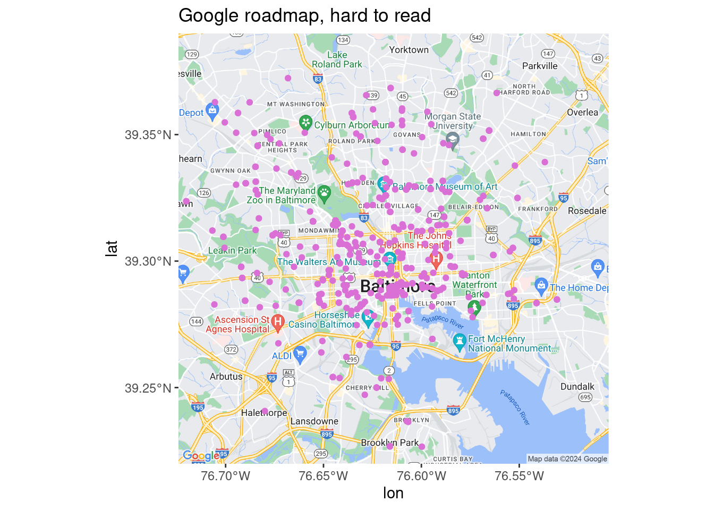
# why is this still called darken if you can use any color?
ggmap(google_road, darken = c(0.5, "white")) +
geom_sf(data = art_sf, inherit.aes = FALSE, color = "orchid") +
labs(title = "Google roadmap, faded") +
coord_sf(ndiscr = 0)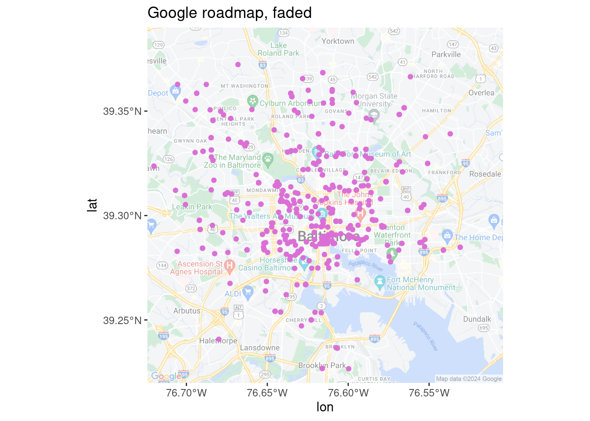
ggmap(google_sat) +
geom_sf(data = art_sf, inherit.aes = FALSE, color = "orchid") +
labs(title = "Google satellite") +
coord_sf(ndiscr = 0)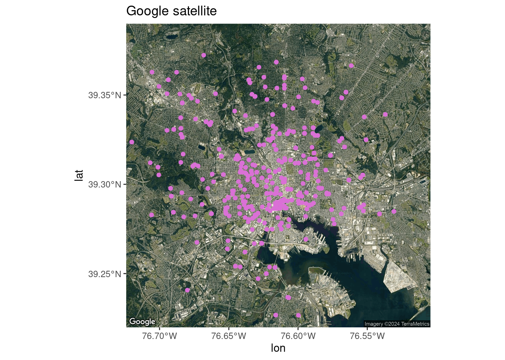
ggmap(stamen_toner) +
geom_sf(data = art_sf, inherit.aes = FALSE, color = "orchid") +
labs(title = "Stamen toner") +
coord_sf(ndiscr = 0)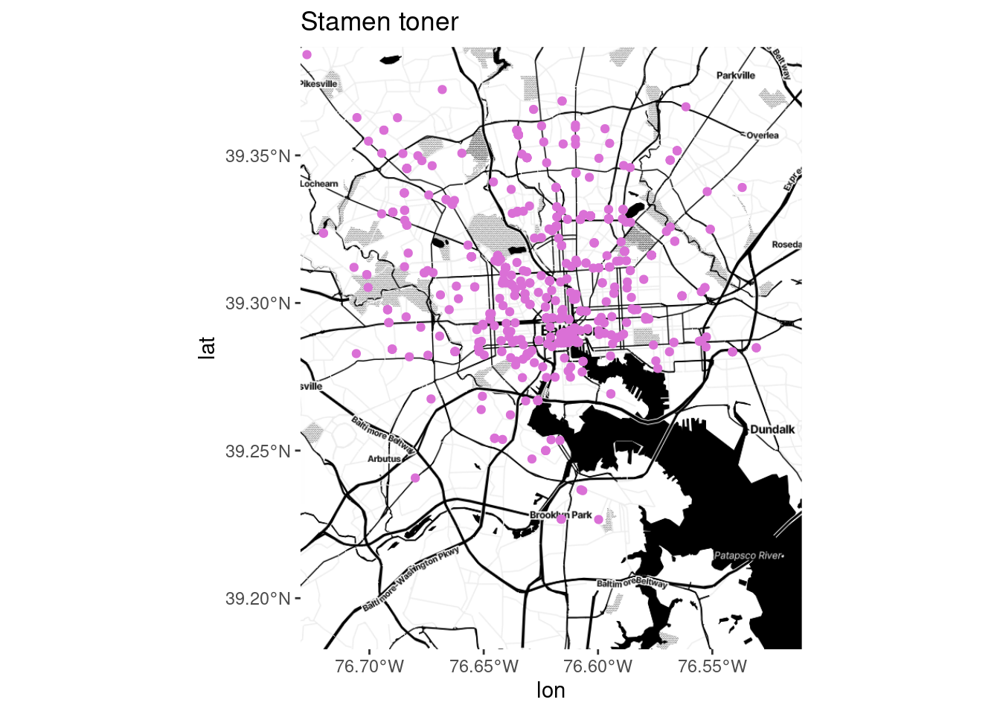
ggmap(stamen_bg) +
geom_sf(data = art_sf, inherit.aes = FALSE, color = "orchid") +
labs(title = "Stamen toner background") +
coord_sf(ndiscr = 0)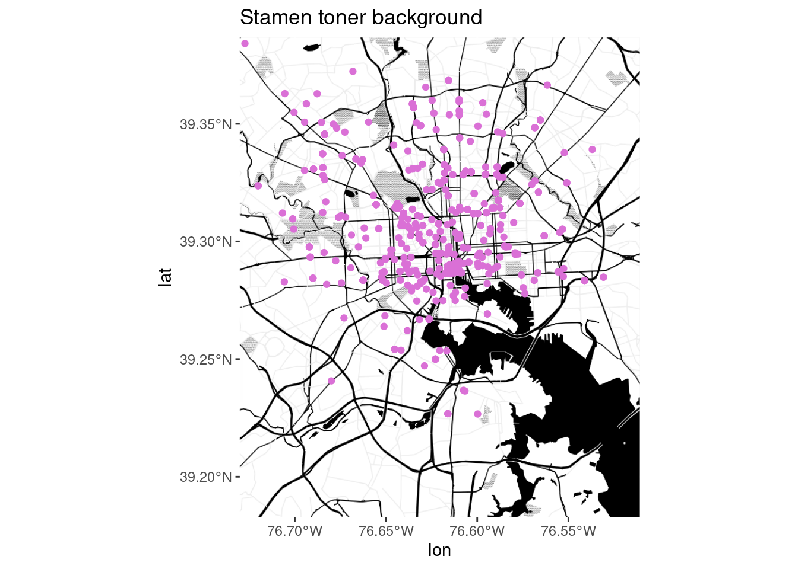
ggmap(stamen_zoom) +
geom_sf(data = art_sf, inherit.aes = FALSE, color = "orchid") +
labs(title = "Stamen toner background, zoom = 13") +
coord_sf(ndiscr = 0)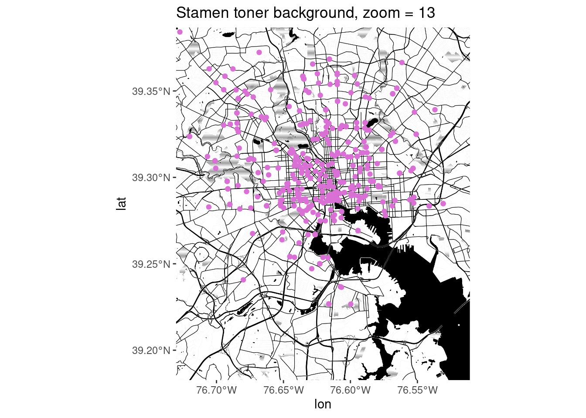
ggmap(stamen_lite) +
geom_sf(data = art_sf, inherit.aes = FALSE, color = "orchid") +
labs(title = "Stamen toner lite") +
coord_sf(ndiscr = 0)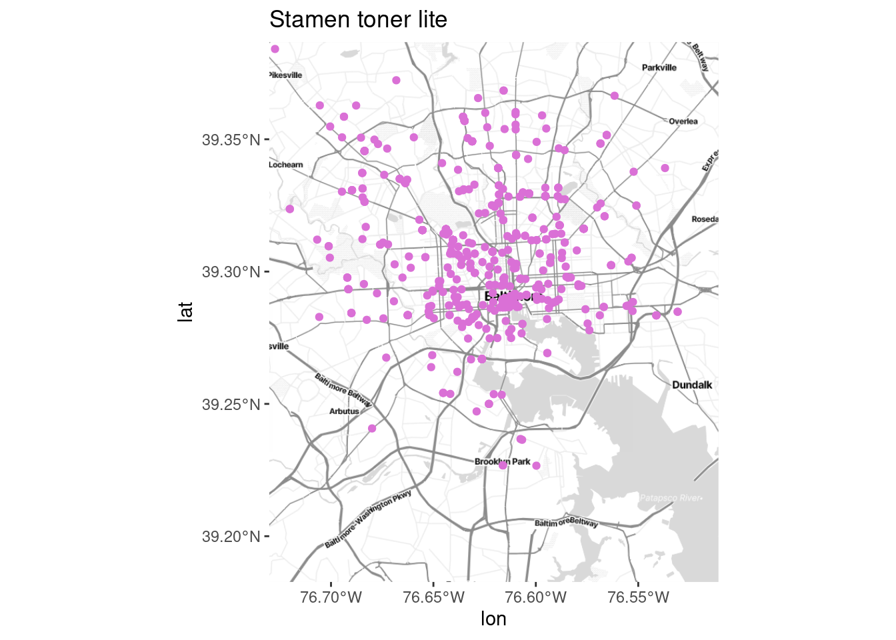
ggmap(stamen_terrain) +
geom_sf(data = art_sf, inherit.aes = FALSE, color = "orchid") +
labs(title = "Stamen terrain background") +
coord_sf(ndiscr = 0)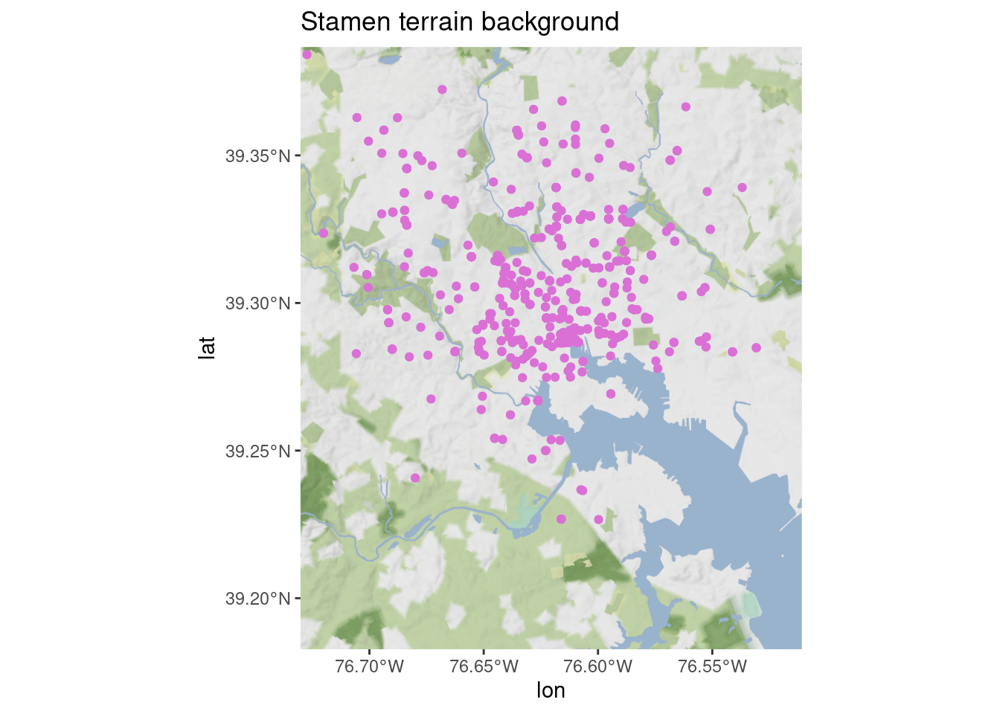
There are also OSM tiles in ggspatial with a few styles, but they require the raster package (whereas the sf ecosystem is moving toward terra) and seem to rely on deprecated functions from other packages. I don’t love it…
library(prettymapr) # not using but needed for ggspatial
ggplot(art_sf) +
ggspatial::annotation_map_tile(zoom = 12, progress = "none", type = "cartolight") +
geom_sf(color = "orchid") +
labs(title = "Carto light via ggspatial") +
coord_sf(ndiscr = 0)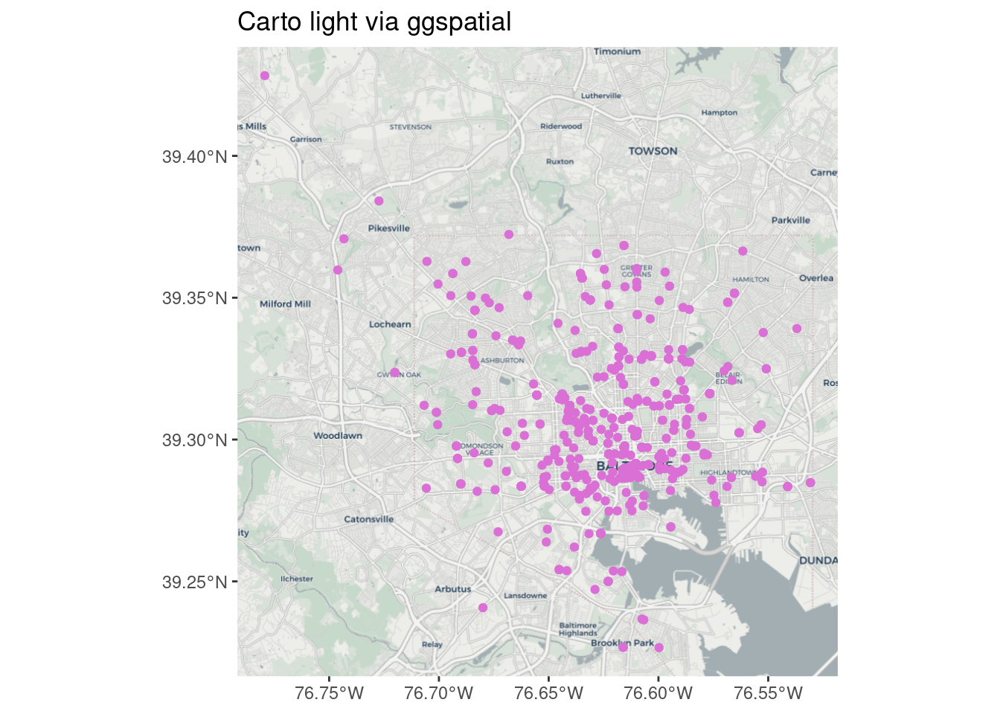
My personal favorite is Stamen toner background (no text labels) with the darken argument to fade the color to gray.
You can also get specific types of data from OpenStreetMap and use them to create the background yourself with ggplot—we probably won’t have time to get into this but it lets you do something comparable to what in web mapping would be vector tiles.
Other locations
Put other stuff on your map. If there are specific locations that provide important context, you might try adding a few essential ones (don’t overdo it). Same goes for regional boundaries, major roads, landmarks to help your reading orient themself, buffers around a location, etc. A few examples I’ve done:
- Using dashed lines to mark an area used in some analyses as a proxy for the focus region
- Using points to mark locations of jails and prisons for a map about tracts incarcerated people come from
- Overlaying lines of major highways (I’m not a huge fan of this if the data isn’t related to highways, but people ask for it sometimes)
- Layering a dot density map of population today by race over historic redlining maps
waste_sf <- balt_tracts |>
left_join(ej_natl, by = c("geoid" = "tract")) |>
filter(indicator == "haz_waste")
# filter by geometry to only get brownfields in city
balt_brownfields <- brownfields_sf |>
st_transform(st_crs(balt_tracts)) |>
st_filter(balt_merge) |>
filter(!is_archived)
ggplot(waste_sf) +
geom_sf(aes(fill = value_ptile), color = "white", linewidth = 0.1, alpha = 0.9) +
# force a legend
geom_sf(aes(shape = "Brownfield"), data = balt_brownfields, size = 2, alpha = 0.9) +
geom_sf(data = balt_merge, color = "black", linewidth = 0.2, fill = NA) +
scale_fill_fermenter(palette = "YlGnBu", direction = 1) +
coord_sf(ndiscr = 0) +
labs(
title = "Proximity to hazardous waste treatment, national percentile by tract",
fill = "Percentile", shape = NULL
) +
guides(fill = guide_colorbar(order = 0))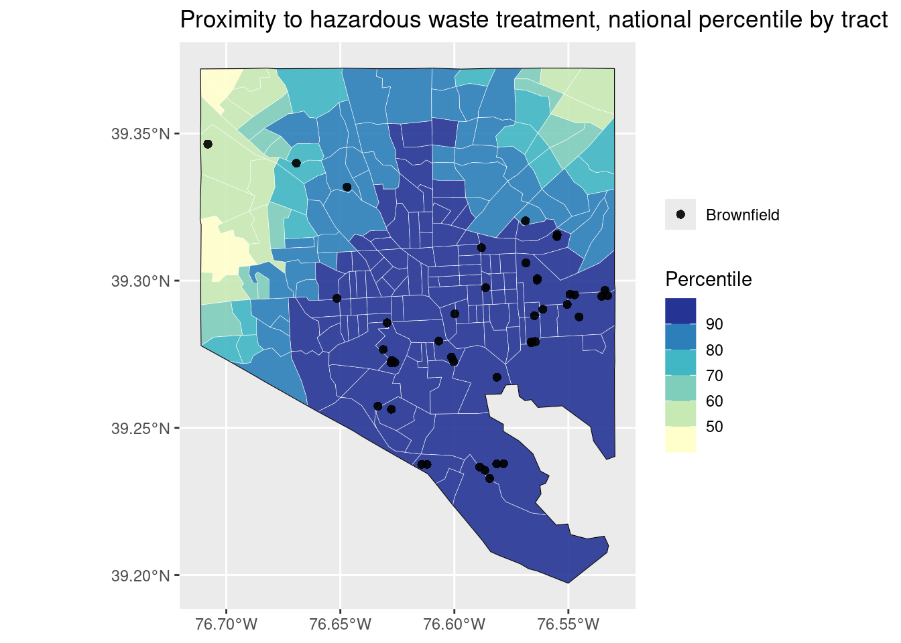
air_sf <- balt_tracts |>
left_join(ej_natl, by = c("geoid" = "tract")) |>
filter(indicator == "pm25")
balt_highways <- highways_sf |>
st_transform(st_crs(balt_tracts)) |>
st_filter(balt_merge)
ggplot(air_sf) +
geom_sf(aes(fill = value_ptile), color = "white", linewidth = 0.1, alpha = 0.9) +
# force a legend
geom_sf(aes(color = "Major highways"), data = balt_highways, linewidth = 0.3) +
geom_sf(data = balt_merge, color = "black", linewidth = 0.2, fill = NA) +
scale_fill_fermenter(palette = "YlGnBu", direction = 1) +
scale_color_manual(values = c("gray20")) +
coord_sf(ndiscr = 0) +
labs(
title = "Elevated particulate matter, national percentile by tract",
fill = "Percentile", color = NULL
) +
guides(fill = guide_colorbar(order = 0))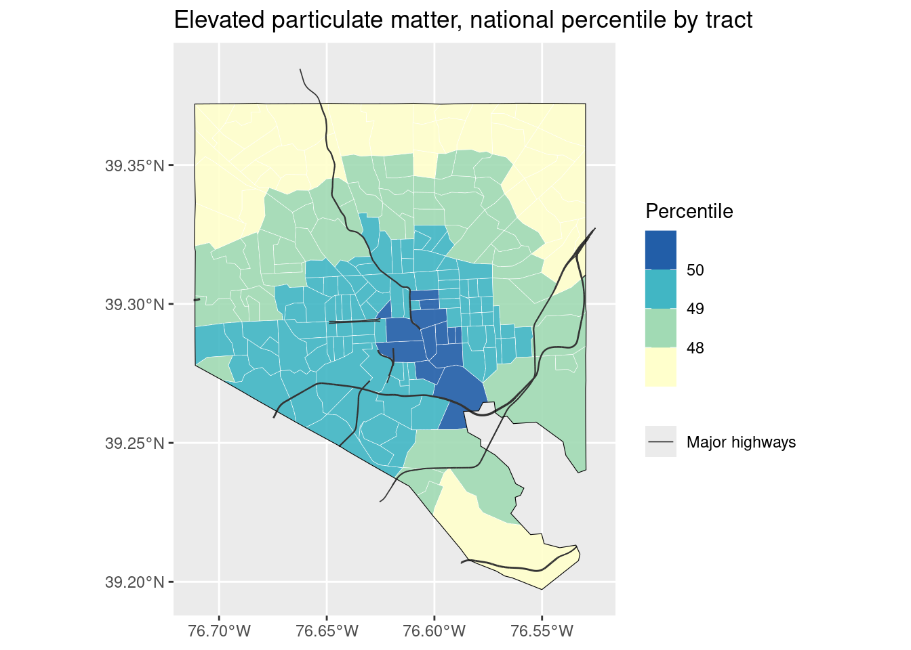
Putting it all together
Here’s everything: a basemap, a choropleth, and some points. Replace the previous ggplot with ggmap, and make sure each layer gets a data argument.
ggmap(stamen_bg) +
geom_sf(aes(fill = value_ptile), data = waste_sf, color = "white", linewidth = 0.1, alpha = 0.9, inherit.aes = FALSE) +
# force a legend
geom_sf(aes(shape = "Brownfield"), data = balt_brownfields, size = 2, alpha = 0.9, inherit.aes = FALSE) +
geom_sf(data = balt_merge, color = "black", linewidth = 0.2, fill = NA, inherit.aes = FALSE) +
scale_fill_fermenter(palette = "YlGnBu", direction = 1) +
coord_sf(ndiscr = 0) +
labs(
title = "Proximity to hazardous waste treatment, national percentile by tract",
fill = "Percentile", shape = NULL
) +
guides(fill = guide_colorbar(order = 0))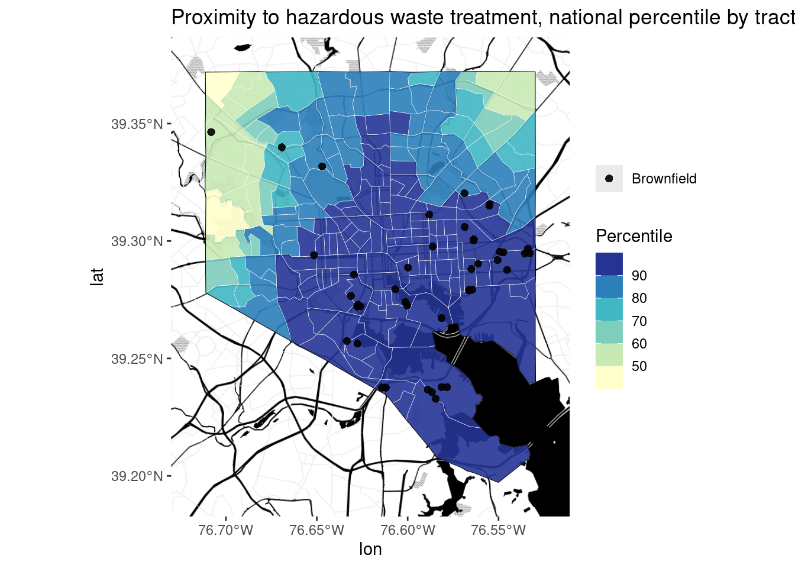
Things that aren’t data
Tell a story outside of your map. Pair the map with text, photos, or other media that provide context and history. Story maps can do this well, and many news outlets run maps in their articles that help you use a map to understand the text and vice versa.
Bottom line
For a complex analysis or history, a map is often not enough. Practice writing about your data and maps, or collaborate with people who do this well.